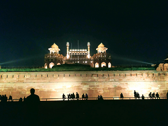

In this page, I am reflecting what I was doing while I am not starring at my computer screen.
I am trying to reflect the fun filled years (previous four) in around four/five photos:
The year of Pandemic: 2020
Till now this year 2020 has been mostly the desk-based work, so far.
With extra saved hours for not having to commute. I am learning the data science. I would say, this enthusiasm has bought me here in preparation of this website. Currently I am going through R for Data Science by Garrett Grolemund and Hadley Wickham. I am also taking the bits and pieces of the Johns Hopkins University Courses on R programming.

Coffee in Pashupatinath temple area

Landscape of Lalitpur, area
The photo on the left is from Pashupatinath temple area a famous and religious Hindus temple complex. Many people from Nepal and India visit this place to pray. The cup at the front signifies where I was staying for the tea. It’s a good location to get the over view of the place. There is the Baghmati river near to this temple (not clearly visible in this photo). Kathmandu valley lies in the Baghmanti river basin and besides providing water to the valley, it has both the religios and cultural significance. Likewise, the second image is from the Lalitpur area, I was hiking on that area on January. The landscape is surreal and ideal place for the short hike during the weekends. I love this photograph because it reflects the livelihood style, housing pattern, topography of the place.
Oh! I had nearly forgot about the workshop we had on February, that paved the path for the activities for the year 2020. The training was more focused on understanding the capabilities of our partners and where we could support them to strength/empower them. The collaborative understanding highlighted the need for improving the data management and support in the analysis. The different variable especially this pandemic will reflect how it will unravel in the future( as of June 2020). We are working on the possibilities of online program. I will be mostly focusing on the data analysis approaches, use of R, GIS and hydrological modelling tools for the water resource management, therefore fearing that the online will not be as effective as in person. But lets see. Hope the curve gets flatten fast.

Recent workshop on water resouce management

I was walking back to home from work and I saw this beautiful house
Just wishing to have a great year ahead. :)
Multi-scale year: 2019
During the year 2019, I was mostly working for the Resource Book: Multiscale Integrated River Basin Management from a Hindu Kush Himalayan Perspective. Apart from that I was also the part of the few training/workshops for supporting the water resouce management.

For most part of the year I had been working for this book. I am one of the author of the first chapter: Conceptual understanding of river basin drivers and their implications for Integrated River Basin Management (IRBM). It lays the foundation of the concept of the IRBM and highlights the significance for the better understanding of river systems.
While working for the book, it was a awesome experience collaborating with the different experts. As I was coordinating with the different authors for the different modules, I was able to understand the holistic behavior of the river basin. Along with consultation of the experts from ICIMOD we were also able to get the input/review from the external experts who had been working in the same topic for years was really helpful for in-depth understanding and increment of my knowledge.
To continue the institutional capacity building, the participants learned about the concept and different aspects of climate change, downscaling of the Global Climate Models, and evaluated the future change in temperature and precipitation patterns. This approach of understanding was better for understanding the water resource management. This enabled to better understand the climate change scenarios, impact of climate change on future hydrology and components of the hydrological regime..

International forum on the Cryosphere and Society was one of the initiative that bought together the experts who working on the Himalayan region, though receiding at the different place of the globe. The climate change-induced cryospheric changes, water availbility in the downstream, frequency and intensity of the hazards and its socioecological impact, mountain ecosystem were some of the interesting topics discussed in the workshop. It was great to take some sample from this great initiative.

This year provided me ample opportunities to lean and share the information that I had. During the fourth international conference on "Mountains in the changing world", October 2019, I presented about the Karnali River Basin of western Nepal, highlighted the need of the detailed analysis on the future scenario and its significance for the water resource management. It was appreciated by the particpants and a fruitful discussion.

This year was also about the field travel, and hikings. been to Li Europan lingues es membres del sam familie. Lor separat existentie es un myth. Por scientie, musica,
sport etc, litot Europa usa li sam vocabular. Li lingues differe solmen in li grammatica, li pronunciation eli plu commun vocabules. Omnicos directe al desirabilite de un nov lingua franca: On refusa continuar payar custosi traductores. At solmen va esser.
The year of exploration: 2018
 My first international travel and to India and for the training as a trainer. What could I expect more. It was great time for meeting the experts who are working in the water resource management. I was part of the Training on hydrological modelling using JAMS/J2000 enhances Afghan expertise in hydrological dynamics and water availability assessment
My first international travel and to India and for the training as a trainer. What could I expect more. It was great time for meeting the experts who are working in the water resource management. I was part of the Training on hydrological modelling using JAMS/J2000 enhances Afghan expertise in hydrological dynamics and water availability assessment
 Pune of India is a great place to be. Considered as the IT capital of India, and Oxford of the east, its great to be there. I was the participant for the science and training wokrshop, IITM, Pune, also I was able sot share my experience of hydrological modelling. I have kept my shot blog here
Pune of India is a great place to be. Considered as the IT capital of India, and Oxford of the east, its great to be there. I was the participant for the science and training wokrshop, IITM, Pune, also I was able sot share my experience of hydrological modelling. I have kept my shot blog here
 It was already late in the evening, and therefore we were not able to go inside the palace but this was really beautiful. Actually, the Red Fort Complex is the UNESCO heritage site, that was built as the palace fort Shan Jahan. The lighting in the evening was mesmerizing, we just watched it and stayed for nearly two hours watching the amalgum of artificial lights and historical monument. It is near to Old Delhi, and one of the memorable place that I have been.
 In overall, I looked exactly like this little baby during this year. I was inspired by the experts, always wanted to know more and was eager to learn them. Participated in few of the social gathering and similar events. To sum up, the year 2018, was full of experiences and happenings.
In overall, I looked exactly like this little baby during this year. I was inspired by the experts, always wanted to know more and was eager to learn them. Participated in few of the social gathering and similar events. To sum up, the year 2018, was full of experiences and happenings.
Year to learn and explore : 2017
Year 2017 was all about field travel and related studies. Most of the studies were related to:
-- multiple field visits at the different parts of Nepal, for supporting the governmental policy in preparation of the community based adaptation practices
-- visit to karnali watershed for understanding the aquatic biodiversity (especially macroinvertebrates) and exploring the impact of climate change and developmental activities

On the way to collect sample at the Karnali

Basantapur Durbar Square Kathmandu
The visit to Karnali watershed was really interesting and inspiring for me because I was supporting in the field visit for my teacher, who had taught me during my school studies. Its great feeling to be connected with the teachers who had highlighted the significance of scientific research during my school days. Those curiosity has played vital part for me working in the research sector.

Each community member voice needs to be respected

Field is fun but the data are always intereseting to look into

I lost the pen, so had taken this image to document teh sample

Bajura and beautiful landscape
Community are the source of knowledge. Interacting about their local challenges and the mitigating approach and what/how government policy can support. To hear the local voices, prioritize it and encourage the government to put in them in the plan of action is really challenging but it was fun too. (1 of 4).
Understanding the field reality is one part another part is how to properly digitize/arrange it in efficient way. I remember sitting together until for the late hours with my friends to manage the information (2 of 4).
Each piece of information is important and we try not to miss it. We were on the field, we were taking the physio-chemical properties of water, we took the photos and even wrote it in paper so that we do not miss or loss any information (3 of 4).
The hard work in the field is refreshed by the beautiful landscape, healthy food, cultural identity (4 of 4)
Thanks: This website is possible only due to the code shared by http://yenchiah.me/. Thanks a lot to him. I am still working, if you want to have a coffee with me, just email me, I am just an email away from you all.